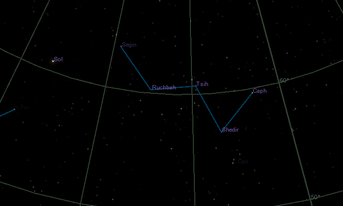
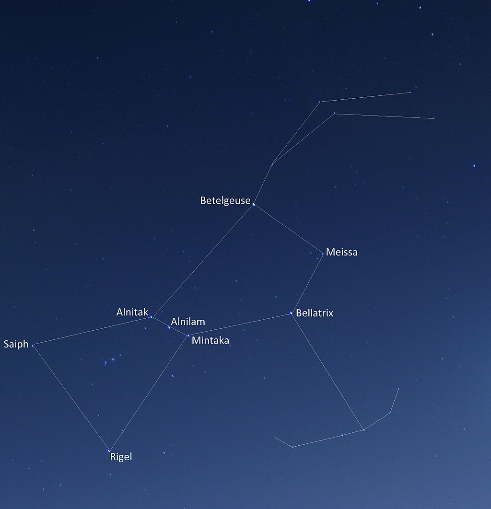
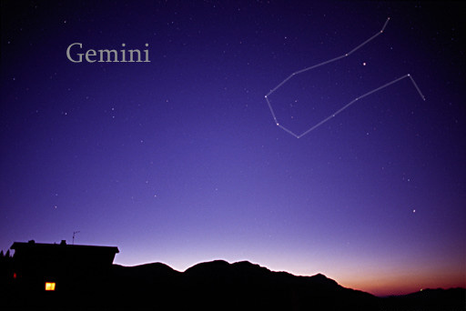

|
AndromedaAndromeda is one of the 48 constellations listed by the 2nd-century Greco-Roman astronomer Ptolemy and remains one of the 88 modern constellations. Located north of the celestial equator, it is named for Andromeda, daughter of Cassiopeia, in the Greek myth, who was chained to a rock to be eaten by the sea monster Cetus. Andromeda is most prominent during autumn evenings in the Northern Hemisphere, along with several other constellations named for characters in the Perseus myth. Because of its northern declination, Andromeda is visible only north of 40° south latitude; for observers farther south it lies below the horizon. It is one of the largest constellations, with an area of 722 square degrees. This is over 1,400 times the size of the full moon, 55% of the size of the largest constellation, Hydra, and over 10 times the size of the smallest constellation, Crux. |
|  | CassiopeiaCassiopeia is a constellation in the northern sky, named after the vain queen Cassiopeia in Greek mythology, who boasted about her unrivalled beauty. Cassiopeia was one of the 48 constellations listed by the 2nd-century Greek astronomer Ptolemy, and it remains one of the 88 modern constellations today. It is easily recognizable due to its distinctive 'W' shape, formed by five bright stars. It is opposite the Big Dipper. In northern locations above latitude 34ºN it is visible year-round and in the (sub)tropics it can be seen at its clearest from September to early November. Even in low southern latitudes below 25ºS it can be seen low in the North. |
|  | OrionOrion is a prominent constellation located on the celestial equator and visible throughout the world. It is one of the most conspicuous and recognizable constellations in the night sky. It was named after Orion, a hunter in Greek mythology. Its brightest stars are Rigel (Beta Orionis) and Betelgeuse (Alpha Orionis), a blue-white and a red supergiant, respectively. |
 |
Ursa MajorUrsa Major ( also known as the Great Bear) is a constellation in the northern sky, whose associated mythology likely dates back into prehistory. Its Latin name means "greater (or larger) she-bear", standing as a reference to and in direct contrast with nearby Ursa Minor, the lesser bear. In antiquity, it was one of the original 48 constellations listed by Ptolemy (2nd century AD), and is now the third largest constellation of the 88 modern constellations. Ursa Major is primarily known from the asterism of its main seven relatively bright stars comprising the "Big Dipper", "the Wagon", "Charles's Wain" or "the Plough" (among others), with its stellar configuration mimicking the shape of the "Little Dipper". |
|  | GeminiGemini is one of the constellations of the zodiac. It was one of the 48 constellations described by the 2nd century AD astronomer Ptolemy and it remains one of the 88 modern constellations today. Its name is Latin for "twins," and it is associated with the twins Castor and Pollux in Greek mythology. Its symbol is Gemini.svg (Unicode ♊).Gemini lies between Taurus to the west and Cancer to the east, with Auriga and Lynx to the north and Monoceros and Canis Minor to the south. |
 |
Canis MajorCanis Major is a constellation in the southern celestial hemisphere. In the second century, it was included in Ptolemy's 48 constellations, and is counted among the 88 modern constellations. Its name is Latin for "greater dog" in contrast to Canis Minor, the "lesser dog"; both figures are commonly represented as following the constellation of Orion the hunter through the sky. The Milky Way passes through Canis Major and several open clusters lie within its borders, most notably M41. |
 |
SagittariusSagittarius is one of the constellations of the zodiac. It is one of the 48 constellations listed by the 2nd-century astronomer Ptolemy and remains one of the 88 modern constellations. Its name is Latin for the archer, and its symbol is Sagittarius.svg (Unicode U+2650 ♐), a stylized arrow. Sagittarius is commonly represented as a centaur pulling-back a bow. It lies between Scorpius and Ophiuchus to the west and Capricornus to the east. The center of the Milky Way lies in the westernmost part of Sagittarius (see Sagittarius A). |